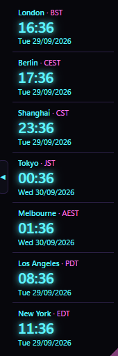

v2.3.1 Windows macOS Linux Free and open source
TimeRibbon
A simple ribbon of world clocks, horizontal or vertical. What time and what day is it where the people you talk to are? One clock per place you choose, each with its own local time, weekday and date, in a small frameless ribbon you can put anywhere on any monitor.
A look
Every place, one glance.
![TimeRibbon as a horizontal ribbon of analogue clocks in the Indigo colour scheme, dark, for London, Berlin, Shanghai, Tokyo, Melbourne, Los Angeles and New York, each with its zone abbreviation and its date in numbers, Tokyo and Melbourne a day ahead of the rest. Below it the sun map is pulled out: a world map lit where it is day and dark with city lights where it is night, each clock's city marked with a red dot and its name. The handle in its own lane at the ribbon's foot shows an upward arrow to put the map back; the resize grip sits in the ribbon's corner.](screenshots/screenshot.png)

What you are looking at
- Two looks, one ribbon: analogue in Indigo, horizontal, with the sun map pulled out below it; small digital in Neon, vertical, its map put away. Style, colour and orientation come from the menus or Settings; size from Settings; the grip in the corner resizes the clocks by hand.
- The sun map: day and night as they stand, city lights on the night side, each clock's city in red. The arrow in its own lane along the ribbon slides it out and back.
- London first, then Berlin, Shanghai, Tokyo and Melbourne as the ribbon heads east.
- The Americas last, since they are behind UTC.
- Different days: every clock keeps its own date. In both, Tokyo and Melbourne are already on the next day.
What it does not do
- The internet, beyond one question. Its only network request asks GitHub for the latest release, at start and once a day, sending nothing about you or your clocks. The donate button and Download hand their addresses to your browser.
- Planning. No calendar, meetings, reminders or alarms. It shows the time; it plans nothing.
- People. A clock is a place, never a person.
- Seconds. Hours and minutes only.
- Your system clock. It reads the time; it never changes it.
Supporting TimeRibbon
Free. It stays free.
There is no paid tier, no licence key and no feature held back behind a donation. If TimeRibbon saves you working out what time it is somewhere else, a contribution supports its maintenance. The same button sits at the foot of Settings.
 Donate
Donate